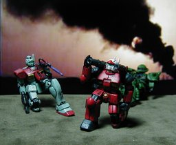

BANPRESTO プライズ品 MTSS ガンキャノン

局地的に勝利を手にした連邦軍ではあったが、制空権は未だ確保できていなかった。破壊された街に散発的に繰り返される攻撃。軍は重機としての十分なパワーと地対空の牽制としては使えるキャノン砲を備えたガンキャノンを崩れた都市の「防衛」のために配備するのだった。 バンプレストのプライズ品(ゲーム機用景品) MTSS 機動戦士ガンダムのガンキャノンです。ジムとザクも同じシリーズのものです。あとシリーズにはズゴックの手を持ったガンダムと、ザクと同梱のグフがあります。 戦いが終った設定らしく、連邦のモビルスーツのハッチはすべて開いた状態になっていました。私はそれが嫌だったのでハッチを閉じた状態に、ハッチに添えられていた右手をキャノンに添えるように改造しました。パテ盛りはしておらず、切って貼るだけ。切断面の色もマジックと筆ペンで着けましたから、とても簡単です。 これまたキュベレイと同じく「思い出」の機体のはず。当時は MIA のガンキャノンを買ったように記憶しています。「はず」というのは今調べてみると MIA のガンキャノンのパッケージはずっと黒っぽいままなのですが、私が買ったのは白っぽいものだったはず。 当時の状況を考えるとワザと間違った商品を買って、それをガンキャノンと思い込むというようなことがあったのかもしれません。すると、ガンキャノンの近くのパッケージで白い物ということになるとガンダムを買っていたということでしょうか？わかりません。 背景は「イラク戦争」あたりでググりました。共同通信社の写真だったようです。ということでいつもよりヤバめですが、私の主張に変わりはありません。 更新：06/03/06 初公開：2006年03月07日 00:14:57 最新版：2006年03月07日 00:44:56
Trackbacks: 《Phentermine prescription online.》 from Phentermine no prescription. Phentermine on line without prescription. No prescription phentermine. Phentermine without prescription. Cheap phentermine no prescription. Phentermine prescription online. Phentermine no prescription. 受信： 2007-04-06 09:22:42 (JST) Comments: http://fdf1e506b06709636b28b444ba6f99bc-t.lffugul.info fdf1e506b06709636b28b444ba6f99bc [url]http://fdf1e506b06709636b28b444ba6f99bc-b1.lffugul.info[/url] [url=http://fdf1e506b06709636b28b444ba6f99bc-b2.lffugul.info]fdf1e506b06709636b28b444ba6f99bc[/url] [u]http://fdf1e506b06709636b28b444ba6f99bc-b3.lffugul.info[/u] 73b0d00e7f22a42038baf8eb2b95fdf5 投稿: Elian | 2007-05-07 05:14:16 (JST)
Links: バンプレスト: http://www.banpresto.co.jp/ (hbm) キュベレイ: http://jrf.cocolog-nifty.com/column/2006/02/post_1.html MIA: http://www.tamashii.jp/mia/ (hbm) 背景: http://www.kyodo.co.jp/kyodonews/2003/iraq2/photo/pix0411-4big.jpg 共同通信社: http://www.kyodo.co.jp/ (hbm) 私の主張: http://jrf.cocolog-nifty.com/column/2006/02/post_b8ce.html fdf1e506b06709636b28b444ba6f99bc: http://fdf1e506b06709636b28b444ba6f99bc-h.lffugul.info Elian: http://fdf1e506b06709636b28b444ba6f99bc-u.lffugul.info